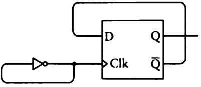

16-bit Ripple Counter in Minecraft
2022-09-21
In this post I will describe how to create a 16-bit ripple counter in Minecraft. I am going to follow the instructions in chapter fourteen of "Code: The Hidden Language of Computer Hardware and Software" by Charles Petzold (1st edition).
I'll start with a very basic circuit called an oscillator. All it does is alternate between 0 and 1 continuously.
All computers have some kind of oscillator that makes everything else move in synchronicity.

A cycle of an oscillator is one interval. The period of the oscillator is the time it takes to complete one cycle. The period of the oscillator I made in Minecraft is about 1 second. The frequency of the oscillator is 1 divided by the period. Therefore, the frequency of this oscillator is 1 cycle per second. These days, the word "hertz" is used in place of "cycles per second". Thus, we can say that this oscillator has a frequency of 1 hertz or 1 Hz.
Now it's time to create a flip-flop. The following is the simplest type of flip-flop, and it is called the R-S or Reset-Set flip-flop.

As you can see, pressing the S input sets the Q output to 1. At this point, the S input has no effect on the Q output. It's only when I press the R input that the Q output is reset to 0. At this point, the R input has no effect on the Q output.
The two NOR gates are more commonly drawn and labeled as in this diagram:

The R-S flip-flop is often drawn like this:

Now I will add two AND gates and an inverter to create the following circuit:

This circuit is called a level-triggered D-type flip-flop. The important thing to note about this circuit is that the value of the Data input will only be reflected in the Q output when the Clock input is 1. Once the Clock input goes back to 0, the output Q will remain whatever it was set to the last time the Clock input was 1. Here I will demonstrate:

This circuit is great, but there's one cause for concern: while the Clock input is 1, the Data input may change any number of times. It would be much better if the Q output reflected the value of the Data input at the moment the Clock input changed from 0 to 1. This behavior describes an edge-triggered D-type flip-flop. This is what it looks like:

And here is a demonstration:

As you can see, the Data input does not effect the Q output while the Clock input is 1. Only at the moment that the Clock input changes from 0 to 1 does the Q output reflect the value of the Data input. This is known as a positive transition of the Clock signal. Download the schematic here.
This symbol indicates an edge-triggered D-type flip-flop:

The little angle brackets indicate that the flip-flop is edge-triggered. Before moving on, I'm going to replace this flip-flop design with a much more compact and faster design that I found on this website. Here it is in Minecraft:

You can download the schematic here. Now I will connect the output of the oscillator to the Clock input of the edge-triggered D-type flip-flop. I'll then connect the Q bar output of the flip-flop to its own Data input, like this:
